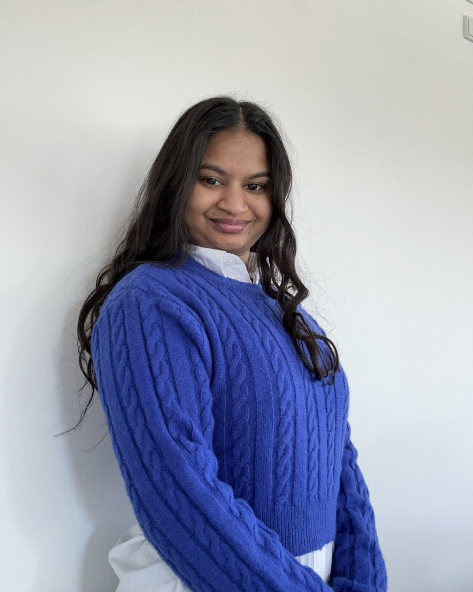

Jeg hedder Frederikke Lindhardt Jensen. Min specialisering er SoMe content creator. Jeg elsker hvordan billeder og vidoer, fortæller en historie og hvordan det efter lader en følelse inden i en. Jeg er meget nysgerrig og elsker at prøve nye ting af. Jeg elsker at man kan gribe tingene forskelligt an på, der er ikke en måde det kan se ud på eller en måde det kan fortælles på. Men mange forskellige måder. Da der kommer hele tiden nye trends. Jeg stræber selv efter at fortælle en historie om mine billeder og videoer. Jeg er meget seriøst om mit arbejde og jeg elsker at man leje så meget rundt med det. Jeg følger med de nye trends på de forskellige sociale medier.
Som seriøst jeg er omkring mit arbejde, lige så seriøst, nysgerrig og et fjollehovede, er jeg i privaten. Jeg er en privat person, en smule introvert. Jeg er meget ærlig, hjælpsom og loyal person. Jeg er en datter, søster og en ven man kan betro sig til uden forbehold. Jeg elsker at slappe af med en god serie eller film, jeg kan også lide og være sammen med familien og venner.
